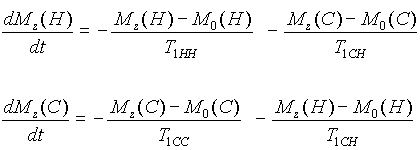
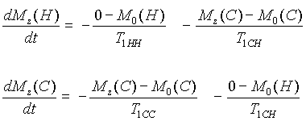
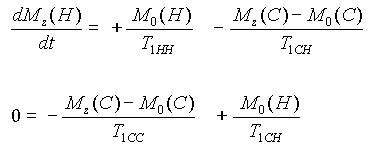
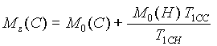

The Basics of NMR
Chapter 9
CARBON-13 NMR
Introduction
Many of the molecules studied by NMR contain carbon. Unfortunately, the carbon-12 nucleus does not have a nuclear spin, but the carbon-13 (C-13) nucleus does due to the presence of an unpaired neutron. Carbon-13 nuclei make up approximately one percent of the carbon nuclei on earth. Therefore, carbon-13 NMR spectroscopy will be less sensitive (have a poorer SNR) than hydrogen NMR spectroscopy. With the appropriate concentration, field strength, and pulse sequences, however, carbon-13 NMR spectroscopy can be used to supplement the previously described hydrogen NMR information. Advances in superconducting magnet design and RF sample coil efficiency have helped make carbon-13 spectroscopy routine on most NMR spectrometers.
The sensitivity of an NMR spectrometer is a measure of the minimum number of spins detectable by the spectrometer. Since the NMR signal increases as the population difference between the energy levels increases, the sensitivity improves as the field strength increases.
 The sensitivity of carbon-13 spectroscopy can be increased by any technique which increases the population difference between the lower and upper energy levels, or increases the density of spins in the sample. The population difference can be increased by decreasing the sample temperature or by increasing the field strength. Several techniques for increasing the carbon-13 signal have been reported in the NMR literature.
The sensitivity of carbon-13 spectroscopy can be increased by any technique which increases the population difference between the lower and upper energy levels, or increases the density of spins in the sample. The population difference can be increased by decreasing the sample temperature or by increasing the field strength. Several techniques for increasing the carbon-13 signal have been reported in the NMR literature.
Unfortunately, or fortunately, depending on your perspective, the presence of spin-spin coupling between a carbon-13 nucleus and the nuclei of the hydrogen atoms bonded to the carbon-13, splits the carbon-13 peaks and causes an even poorer signal-to-noise ratio. This problem can be addressed by the use of a technique known as decoupling, addressed in the next section.
Decoupling
The signal-to-noise ratio in an NMR spectrometer is related to the population difference between the lower and upper spin state. The larger this difference the larger the signal. We know from chapter 3 that this difference is proportional to the strength of the Bo magnetic field.
To understand decoupling, consider the familiar hydrogen NMR spectrum of
HC-(CH2CH3)3.
 The HC hydrogen peaks are difficult to see in the spectrum due to the splitting from the 6 -CH2- hydrogens. If the effect of the 6 -CH2- hydrogens could be removed, we would lose the 1:6:15:20:15:6:1 splitting for the HC hydrogen and get one peak.
We would also lose the 1:3:1 splitting for the CH3 hydrogens and get one peak. The process of removing the spin-spin splitting between spins is called decoupling. Decoupling is achieved with the aid of a saturation pulse. If the affect of the
HC hydrogen is removed, we see the following spectrum.
Similarly, if the affect of the -CH3 hydrogens is removed, we see this spectrum.
The HC hydrogen peaks are difficult to see in the spectrum due to the splitting from the 6 -CH2- hydrogens. If the effect of the 6 -CH2- hydrogens could be removed, we would lose the 1:6:15:20:15:6:1 splitting for the HC hydrogen and get one peak.
We would also lose the 1:3:1 splitting for the CH3 hydrogens and get one peak. The process of removing the spin-spin splitting between spins is called decoupling. Decoupling is achieved with the aid of a saturation pulse. If the affect of the
HC hydrogen is removed, we see the following spectrum.
Similarly, if the affect of the -CH3 hydrogens is removed, we see this spectrum.
A saturation pulse is a relatively low power B1 field left on long enough for all magnetization to disappear.
A saturation pulse applied along X' rotates magnetization clockwise about X' several times. As the magnetization is rotating, T2 processes cause the magnetization to dephase. At the end of the pulse there is no net Z, X, or Y magnetization. It is easier to see this behavior with the use of plots of MZ, MX', and MY' as a function of time.
Since the B1 pulse is long, its frequency content is small. It therefore can be set to coincide with the location of the -CH2- quartet and saturate the -CH2- spin system. By saturating the -CH2- spins, the -CH2- peaks and the splittings disappear, causing the height of the now unsplit HC- and -CH3 peaks to be enhanced.
Now that the concept of decoupling has been introduced, consider the carbon-13 spectrum from CH3I. The NMR spectrum from the carbon-13 nucleus will yield one absorption peak in the spectrum.
Adding the nuclear spin from one hydrogen will split the carbon-13 peak into two peaks.
Adding one more hydrogen will split each of the two carbon-13 peaks into two, giving a 1:2:1 ratio.
The final hydrogen will split each of the previous peaks, giving a 1:3:3:1 ratio.
If the hydrogen spin system is saturated, the four lines collapse into a single line having an intensity which is eight times greater than the outer peak in the 1:3:3:1 quartet since 1+3+3+1=8 .
In reality, we see a single line with a relative intensity of 24.
Where did the extra factor of three come from?
NOE
The answer to the question raised in the previous paragraph is the nuclear Overhauser effect (NOE). To understand the NOE, consider a set of coupled hydrogen and carbon-13 nuclei.
Assume that the red-green nuclei are carbon-13 and the blue-pink nuclei are hydrogen.
T1CC is T1 relaxation due to interactions between carbon-13 nuclei.
T1HH is T1 relaxation due to interactions between hydrogen nuclei.
T1CH is T1 relaxation due to interactions between carbon-13 and hydrogen nuclei.
MZ(C) is the magnetization due to carbon-13 nuclei. Mo(C) is the equilibrium magnetization of carbon-13. MZ(H) is the magnetization due to hydrogen nuclei. Mo(H) is the equilibrium magnetization of hydrogen.
The equations governing the change in the Z magnetization with time are:

If we saturate the hydrogen spins, MZ(H) = 0.

Letting the system equilibrate, d MZ(C) /dt = 0 .

Rearranging the previous equation, we obtain an equation for MZ(C) .
 .
Note that MZ(C) has increased by Mo(H) T1CC / T1CH which is approximately 2 Mo(C), giving a total increase of a factor of 3 relative to the total area of the undecoupled peaks. This explains the extra factor of three (for a total intensity increase of 24) for the carbon-13 peak when hydrogen decoupling is used in the carbon-13 spectrum of CH3I.
The following spin-echo sequence has been modified to decouple the hydrogen spins from the carbon-13 spins.
The signal is recorded as the second half of the echo.
Population Inversion
Another method of improving the NMR signal in systems with spin-spin coupling is population inversion. To understand the concept of a population inversion, recall from Chapter 3
that Boltzmann statistics tell us that there are more spins in the lower spin state than the upper one of a two spin state system. Population inversion is the interchange of the populations of these two spin states so that there are more spins in the upper state then the lower one.
To understand how a population inversion improves the signal-to-noise ratio in a spectrum, consider the CHI3 molecule.
CHI3 will have four energy levels (L1, L2, L3, and L4)
due to C-H spin-spin coupling. There are two carbon-13 absorption frequencies f1 and f2 and two hydrogen absorption frequencies f3 and f4. The population distribution between the four levels is such that the lowest state has the greatest population and the highest the lowest population. The two intermediate states will have populations between the outer two as indicated by the thickness of the levels in the accompanying diagram. The four lines in the spectrum will have intensities related to the population difference between the two levels spanned by the frequency. The two carbon-13 absorption lines (f1 and f2) will have a lower intensity than the hydrogen lines (f3 and f4) due to the smaller population difference between the two states joined by f1 and f2.
If the populations of L3 and L4 are inverted
with a frequency selective 180 degree pulse at f3, the signal at f2 will be enhanced because of the greater population difference between the states joined by f2. It should be noted that the signal at f1 will be inverted because the upper state of the two joined by f1 has a greater population than the lower one. An example of a population inverting pulse sequence designed to enhance the carbon-13 spectral lines is depicted in the animation window.
1-D C-13 Spectra
The following table of compounds contains links to their corresponding one-dimensional carbon-13 NMR spectra. The spectra were recorded on a 300 MHz NMR spectrometer with a delay time between successive scans of two seconds. This relatively short delay time may cause differences in the peak heights due to variations in T1 values. Other differences may be caused by variations in the nuclear Overhauser effect. In spectra recorded with deuterated chloroform (CDCl3) as the lock solvent, the three peaks at  = 75 are due to splitting of the CDCl3 carbon-13 peak by the nuclear spin = 1 deuterium nucleus.
= 75 are due to splitting of the CDCl3 carbon-13 peak by the nuclear spin = 1 deuterium nucleus.
| Molecule | Formula | Solvent | Spectrum
|
|---|
| cyclohexane | C6H12 | CDCl3
|
|
| benzene | C6H6 | CDCl3
|
|
| toluene | C6H5CH3 | CDCl3
|
|
| ethyl benzene | C6H5CH2CH3
| CDCl3
|
|
| acetone | CH3(C=O)CH3| CDCl3
|
| | methyl ethyl ketone | CH3(C=O)CH2CH3 | CDCl3 |
| | ethanol | CH3CH2OH | CDCl3
|
| | ethanol | CH3CH2OH | D2O
|
| | 1-propanol | CH3CH2CH2OH | CDCl3
|
| | 2-propanol | (CH3)2CHOH | CDCl3
|
| | t-butnol | (CH3)3COH | CDCl3
|
| | 2-butanol | CH3CH2CH(OH)CH3 | CDCl3 |
| | pyridine | C5H5N | CDCl3
|
| |